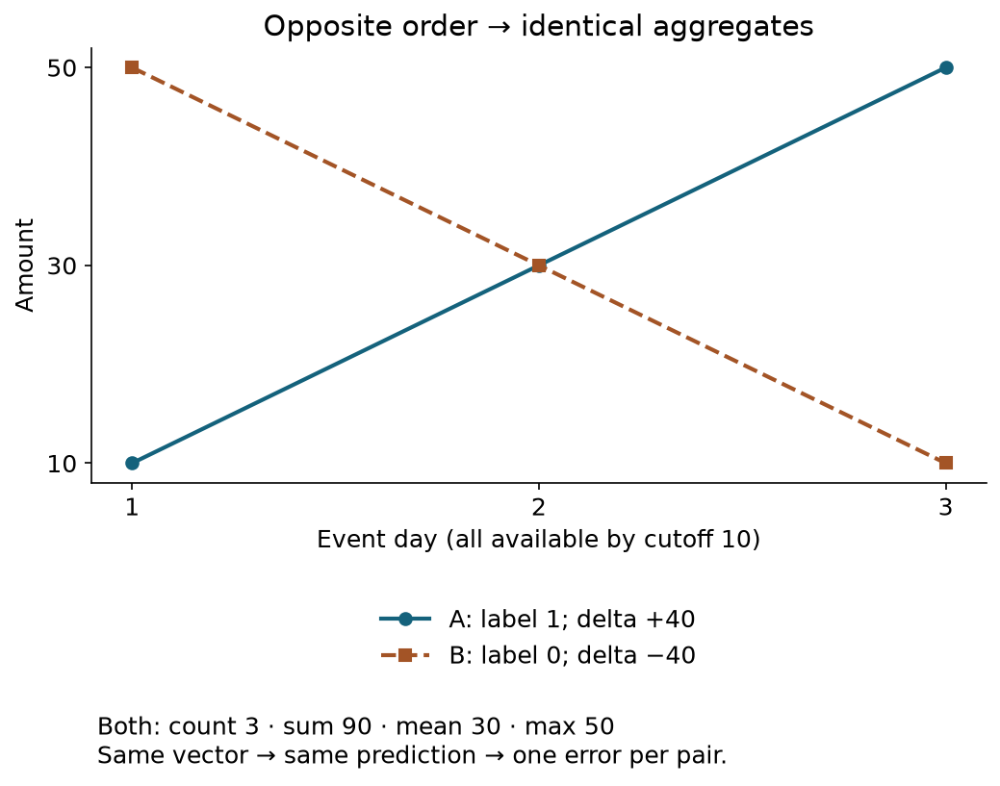
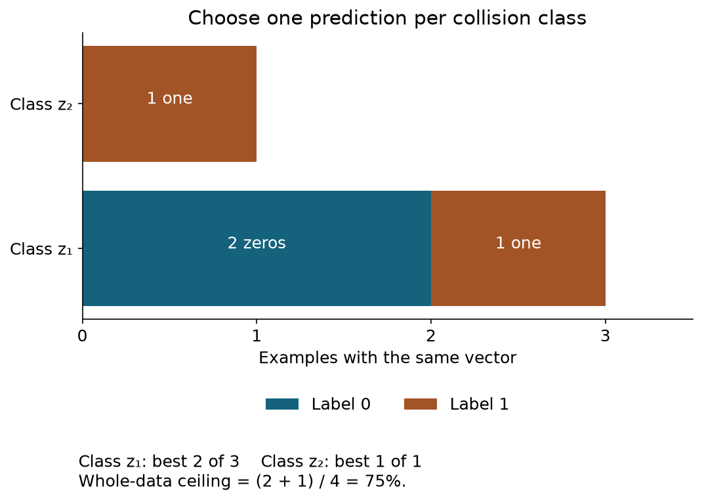
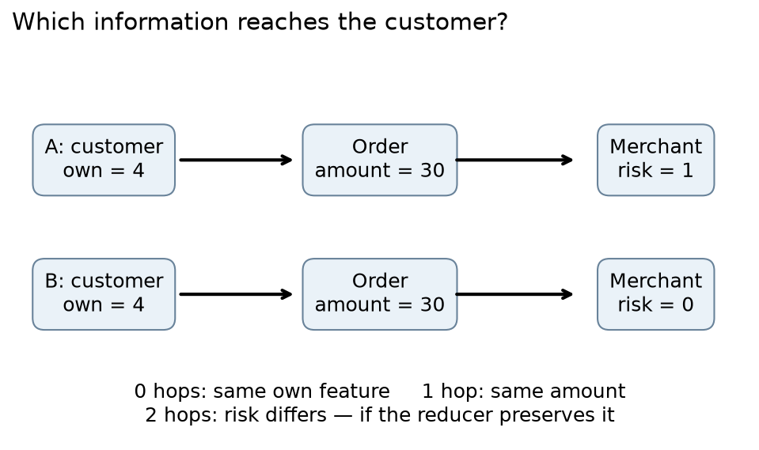
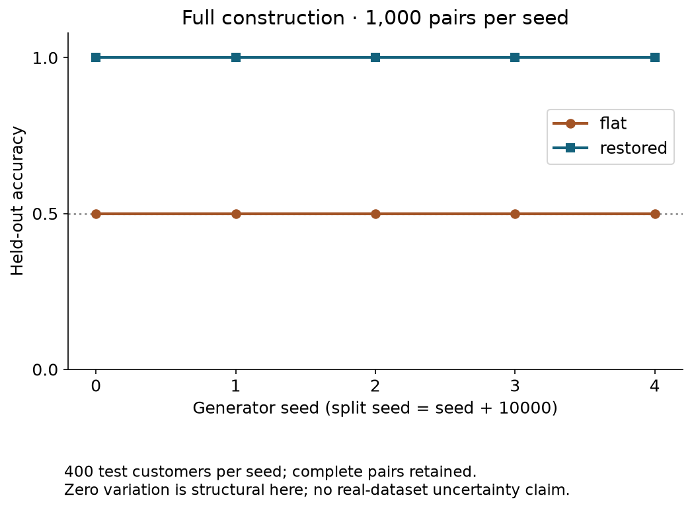

Year2 · Quarter4 · Lesson077
Single-table ceiling: an information audit
Exhibit a collision. Prove its bound. Restore the missing information.
Start with retrieval¶
Before reading further, answer from memory: what did the L035 aggregation discard? Why can an old event be unavailable at prediction time? In L076, which operation decides what a customer can receive from other rows?
Your tangible win is a ceiling certificate: two different histories, one identical input vector, incompatible labels, and a calculation showing the best possible accuracy from that vector. You will then break the collision with a feature computed from the eligible history.
This strengthens the mission by making the relational thesis falsifiable. You must name the information a model receives before interpreting its score. The Fey et al. position paper motivates learning over connected database records. Here we test one carefully bounded consequence of discarding information.
Scope check. This curriculum unit is an original synthesis experiment, with no newly introduced model or assigned published table. Its complete experiment is reproduced below. The construction establishes a possibility and an information bound; it does not measure the prevalence of this problem in real databases.
1 · Two histories become the same row¶
A representation is the information passed to a predictor. A predictor maps that information to a label or probability. In this lesson it receives one fixed vector for each customer. Customer IDs, input positions, pair IDs and other customers' records are excluded from that vector.
Worked example. Customer A has amounts 10, 30, 50 on days 1, 2, 3. Customer B has 50, 30, 10 on the same days. Both have the same own-row feature. Let the label be 1 when the final eligible amount exceeds the first, otherwise 0. These labels describe a historical pattern, so we can inspect their correctness directly.
For each history, count = 3, sum = 90, mean = 30, maximum = 50. Our flat representation is [own, count, sum, mean, max]. It gives A and B the same vector, although their labels differ.

A collision occurs when different underlying records map to the same representation. A join can retain both histories as multiple ordered records. The information loss here occurs in the chosen aggregation, which discards event order. A single-table layout can preserve the missing information if we choose richer columns.
The L035 visual below also varies product identity. Use it as a retrieval exercise: identify which displayed columns collide and which recovered columns distinguish the customers. Our new experiment varies time order only, isolating a single cause.
2 · Prove the ceiling before training¶
In plain terms. A predictor that sees the same input must make the same deterministic prediction. If half the customers sharing that input need label 0 and half need label 1, it must miss half of them.
Let z = F(H) be the flat vector produced by aggregation F from history H. A collision class is the collection of examples with the same z. Write n(z,0) and n(z,1) for the counts of their two labels. Let N be the total number of examples.
For a given class, predicting 0 gets n(z,0) correct. Predicting 1 gets n(z,1) correct. The best choice therefore gets max(n(z,0), n(z,1)) correct. Summing these independent choices gives the exact empirical upper bound:
best accuracy using z alone = Σ_z max(n(z,0), n(z,1)) / N.
This bound allows any mapping from vectors to labels. A particular trained model may perform worse. The calculation uses labels to audit information after the model is frozen; the classifier never receives those test labels.
Worked example. One class has labels [0,0,1]; another contains [1]. The ceiling is (2 + 1) / 4 = 0.75. Balanced classes give 0.5. Merely finding one collision does not establish a 0.5 ceiling for the entire dataset.

Random predictions. If a balanced collision class receives probability q of predicting 1, expected accuracy is 0.5q + 0.5(1−q) = 0.5. Independent randomized predictions can score above 0.5 on a finite draw, but cannot exceed it in expectation. Our measured classifiers are deterministic. Allowing a row index or unique ID changes the information interface and invalidates this particular bound.
A population statement. For our generator, every base history has an equally likely forward and reverse version. Its flat vector is identical in the two cases, so P(label=1 | z)=0.5. This establishes the same bound for that defined distribution. On arbitrary real continuous features, absence of exact duplicates does not establish predictability: a finite-sample lookup can achieve a vacuous ceiling of 1 without generalizing.
3 · Restore the information and keep the classifier fixed¶
Point-in-time eligibility means that information was available at the declared prediction cutoff. Here an event is eligible only when both event_day ≤ 10 and available_day ≤ 10. A day-2 record arriving on day 11 is excluded. A day-12 record is also excluded. This restates the time boundary from L076.
An ordered feature. Sort eligible events by their event time, then compute delta = last amount − first amount. A gets +40; B gets −40. Add delta as a sixth column. Now the classes separate, and the rule delta > 0 exactly matches the defined target.
Our trained control. A decision stump is a tree with one threshold comparison. The visible trainer enumerates columns, thresholds between observed training values, and the label on each side. It chooses the most accurate training rule, with a fixed first-match tie policy. We fit the same learner on five columns and then on six. No hyperparameter or threshold is selected using validation or test labels.
Why this control matters. A tabular learner can use a relationally derived feature. The perfect result after adding delta demonstrates that this representation contains enough information for this target. It also falsifies the broader claim that tabular predictors intrinsically cannot solve relationally defined tasks. A GNN is unnecessary for this construction.
Scope check. The target is deliberately computed from available historical order. This is a controlled representational task, not a forecast of future spending. Computing delta is legitimate here; using post-cutoff spending to predict a future outcome would be leakage. The experiment does not establish an advantage for learned feature discovery over manual feature engineering.
4 · Other boundaries: name the missing operation¶
Cardinality means the number of records. Mean pooling maps [2] and [2,2] to 2. A target asking whether there are two records requires a count. Sum distinguishes these two cases, but [1,3] and [2,2] have equal count and sum. A reducer's sufficiency depends on the target.
Identity means which entity a key refers to. Two customers can have identical amounts and counts while buying from different merchants. Numeric differences between arbitrary merchant IDs have no semantic meaning. Following a foreign key to the merchant's attributes can expose useful information. Renaming IDs while preserving links should preserve the answer.
Multi-hop access means following more than one relation. In the example below, a customer links to an order, and the order links to a merchant. Merchant risk is two edges away. Own-row features and one-hop order amounts cannot distinguish the pictured worlds. Two-hop access can expose the risk bit if the message and reduction preserve it. All pictured records are assumed available at the cutoff.

Aggregation limits also apply to graph models. If all messages are identical and a graph layer takes their mean, duplicating a neighbor may leave the representation unchanged. More relational access supplies candidate information; the encoding and aggregation still determine what survives. Deep Sets studies permutation-invariant functions on sets. It is a useful reading on this design problem; no Deep Sets benchmark is reproduced here.
Rule constraints restrict combinations of outputs. Suppose two bookings compete for one remaining seat. Independent high probabilities for both bookings do not enforce accepted_A + accepted_B ≤ 1. A shared allocation or constrained decision rule is needed. Features may encode seat availability, but a row-wise prediction loss alone gives no hard feasibility guarantee. Message passing alone gives no such guarantee either.
5 · Run the complete reproduction¶
The full construction uses 1,000 independent pairs per seed, two customers per pair, three eligible events per customer, and two excluded events. Each pair shares a random base amount, positive increment and own-row feature. Its two histories reverse the same three values. IDs and physical row order are randomized and used only for routing.
Split. Shuffle pair groups using split_seed = seed + 10000. Put 60% of groups in training, 20% in validation and 20% in test. That yields 1,200 / 400 / 400 customers. Keeping each pair together makes every partition exactly balanced within each flat collision class. Different pairs can also collide; each contributes one label of each kind. Customers and their event rows never cross partitions.
Held fixed. Database, cutoff, pair partition, target, stump trainer and accuracy metric. Varied. Only whether delta is supplied. Measured. Train, validation and test accuracy, plus a post-freeze collision audit on test. Accuracy is the fraction of correct hard labels. Validation is reported as a diagnostic; the declared protocol makes no selection with it.
Complete implementation. The notebook exposes generation, eligibility, representations, splitting, fitting, prediction and evaluation. Three TODOs remain live in the actual runner. SQL provides an independent aggregation/ordering oracle, and a library decision tree checks the information-access control. Changing only excluded amounts must leave both representations unchanged.
Author-reference evidence — measured locally; not output from your current kernel.
| Seed | Flat test accuracy | Restored test accuracy | Exact ceilings, flat / restored |
|---|---|---|---|
| 0 | 0.500 | 1.000 | 0.500 / 1.000 |
| 1 | 0.500 | 1.000 | 0.500 / 1.000 |
| 2 | 0.500 | 1.000 | 0.500 / 1.000 |
| 3 | 0.500 | 1.000 | 0.500 / 1.000 |
| 4 | 0.500 | 1.000 | 0.500 / 1.000 |
| Mean ± sample SD | 0.500 ± 0.000 | 1.000 ± 0.000 | 0.500 / 1.000 |
SQL feature oracle, future/late-arrival invariance, pair isolation, storage-order invariance and independent depth-three tree control: PASS.

Five seeds vary the generated database and split, so these are five finite-support experiments under one generator. They are not five independent real datasets. Sample standard deviation describes those five runs; zero spread reflects the exact construction. It gives no estimate of a cross-domain RDL advantage. No significance test is needed to prove the collision argument.
Reproduce locally: from the repository root, run .venv/bin/python labs/_verify_l077.py. This executes all five full experiments and the independent checks. The notebook's final experiment uses the same pair count and seeds; it is not a smaller proxy.
Open the lab · Download the notebook · Protocol and commands · Machine-readable evidence.
6 · Synthesize a claim that could fail¶
Separate three questions when carrying this result into real work:
- Information: does the representation discard a variable required by the target? This lesson answers that exactly for one construction.
- Generalization: do the accessible relationships remain predictive across new entities or time periods? Revisit temporal splits in L055 and temporal shift in L068. A collision proof cannot answer this.
- Operational cost: what are the cost, latency and maintenance demands of computing or learning relational features? Revisit L069's operating limits. A representation can be sufficient while its implementation is impractical.
The planned L056b/L069b extensions are not present as published lesson files here; these links point to the available related units. Their questions remain distinct from the information proof.
A bounded thesis. “For the paired-history generator and [own,count,sum,mean,max], every deterministic row-only predictor has accuracy at most 0.5. Adding the eligible last-minus-first feature permits perfect classification.” You can refute an implementation of this thesis by producing a same-interface deterministic prediction vector with accuracy above its exact bound, or a wrong restoration result. Check IDs, cutoff, order, partition and labels before changing the theorem.
A research hypothesis. “On specified real temporal tasks, a learned relational model improves held-out performance over a tabular model with a declared feature-engineering budget, at acceptable inference cost.” This needs several real tasks, matched data access and tuning budgets, and a frozen evaluation protocol. Tabular models with adequate relational features, weak or unstable links, and restrictive graph reducers are potential counter-evidence.
RelBench v1 supplies real predictive tasks and comparisons against feature-engineered tabular models. Those empirical claims require their own reproduction. L076's full historical replay names a published target and contains the complete archived model/trainer with local, Colab and Modal operators. That benchmark remains NOT_RUN in the saved L076 evidence. This lesson's exact synthetic results do not fill that gap.
EXIT · submit a ceiling certificate¶
Complete the notebook's three TODOs and all CHECK cells. Submit the saved five-seed results together with 150–250 words containing: your exact input vector; two colliding histories with labels; the bound and its assumptions; the feature that repairs it; and one real-data experiment that could weaken the broader relational thesis.
Then create a new collision: preserve count and sum while changing a target you define. State whether your current repair feature distinguishes it. Explain why a perfect lookup using unique IDs would leave new-entity generalization unresolved.
Reading route. Start with the Fey et al. position paper for the relational learning motivation, then RelBench's user-study design for the empirical test it demands. Ask the teaching agent about any step you cannot derive; send your certificate for grading. Authored material and passing checks do not record learner mastery.
Next conceptual step. L078 develops message passing: specify which record sends a message, which neighbors receive it, and what their reduction preserves. Keep this lesson's question beside every graph layer: which different histories still produce the same representation?